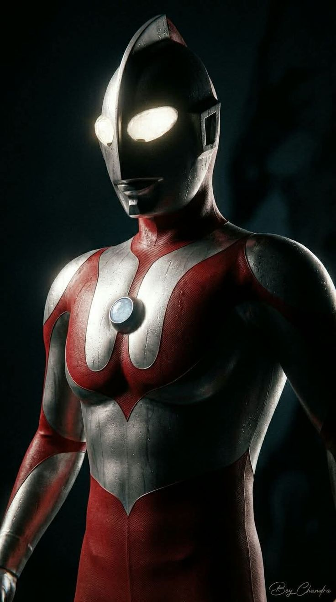

Ultraman Original
This is the original ULTRAMAN.
Created in 1966 by Tsuburaya Productions
A classic tokusatsu hero fighting giant monsters.

This is the original ULTRAMAN.
Created in 1966 by Tsuburaya Productions
A classic tokusatsu hero fighting giant monsters.